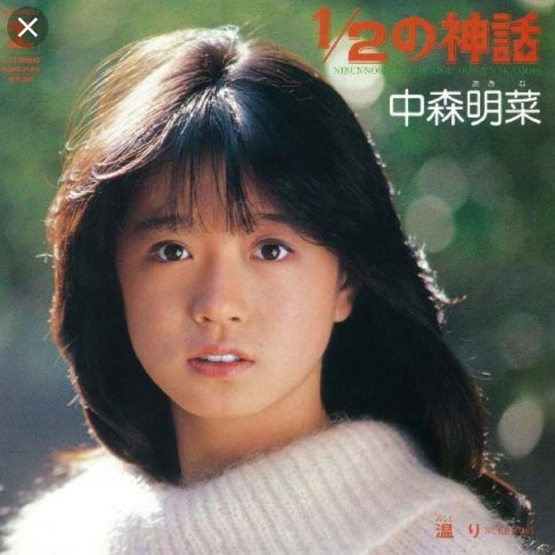
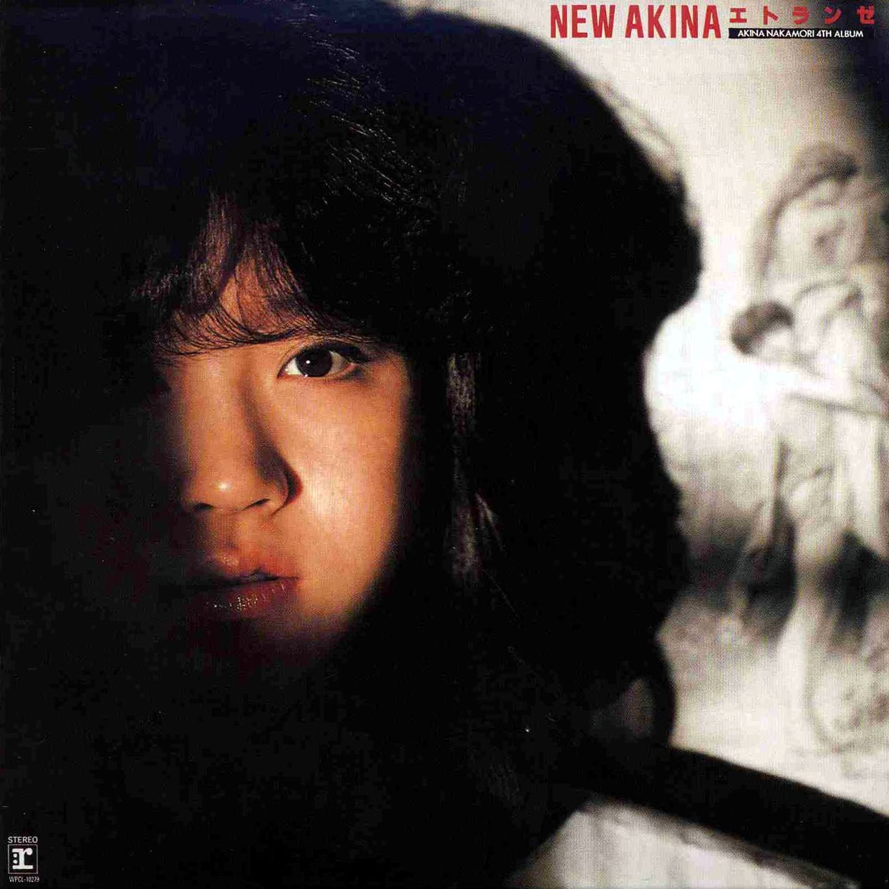
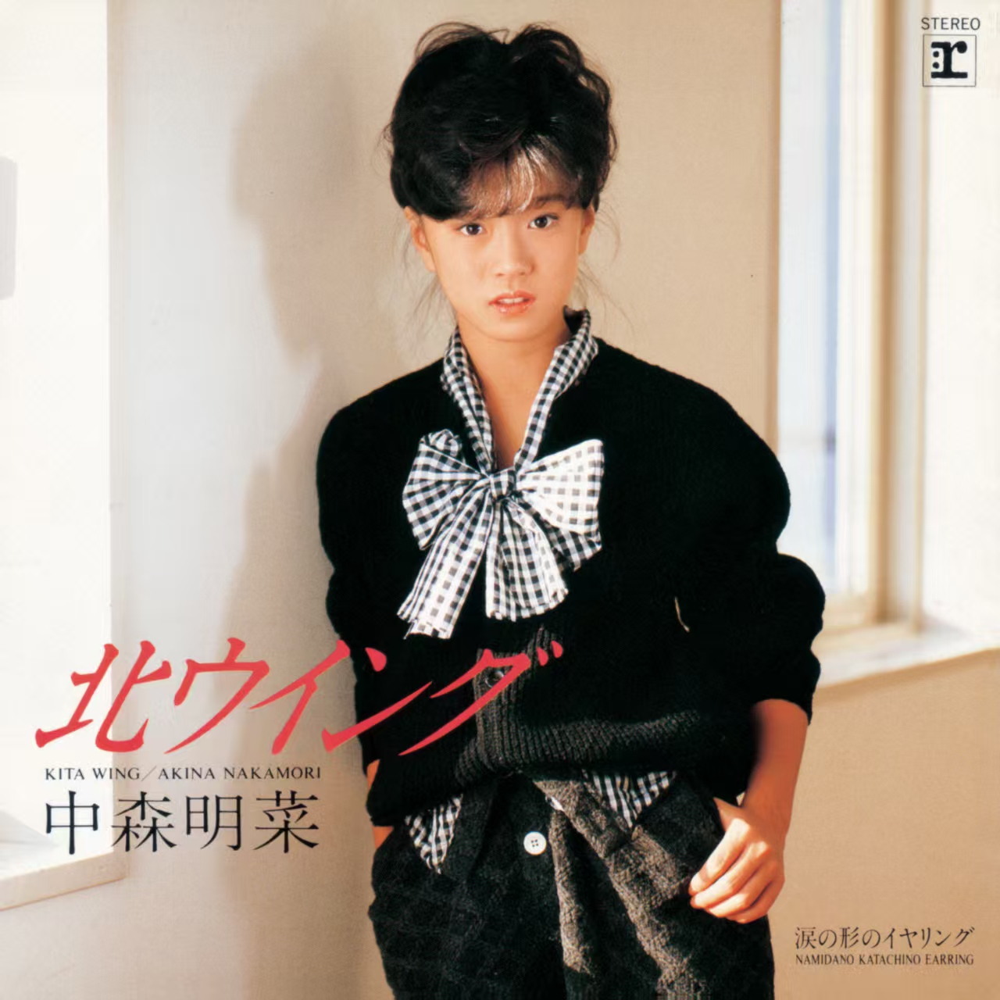
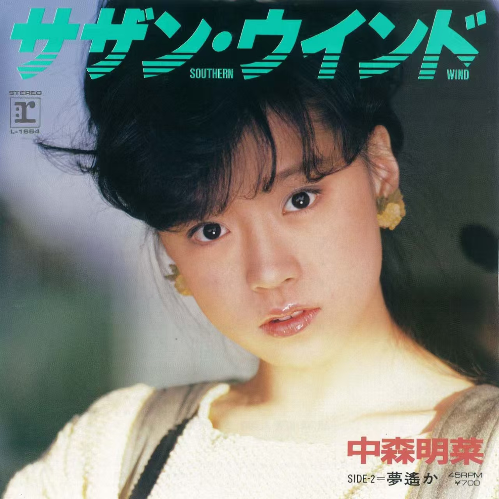
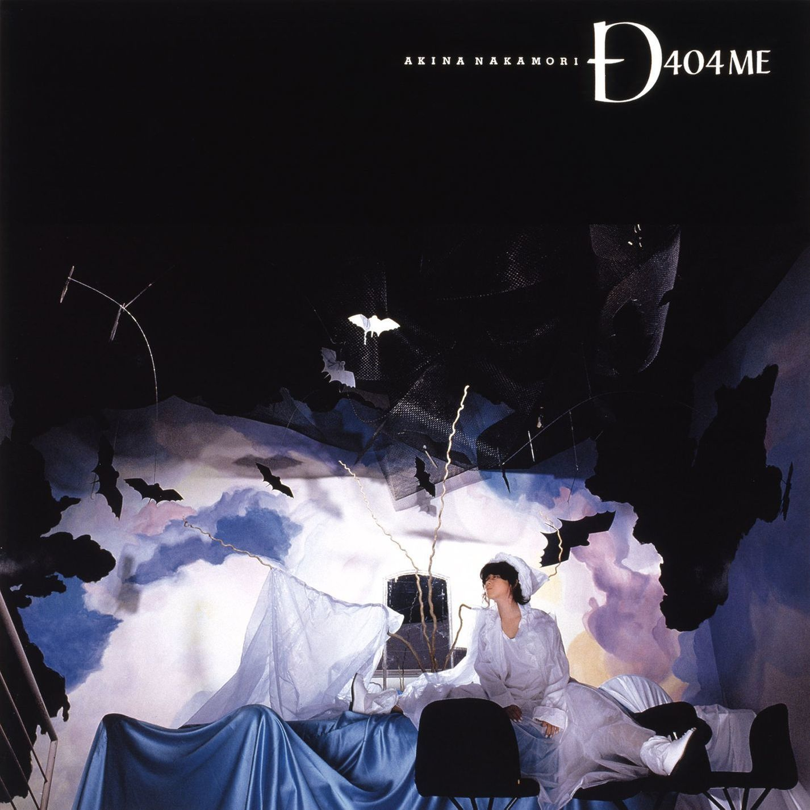
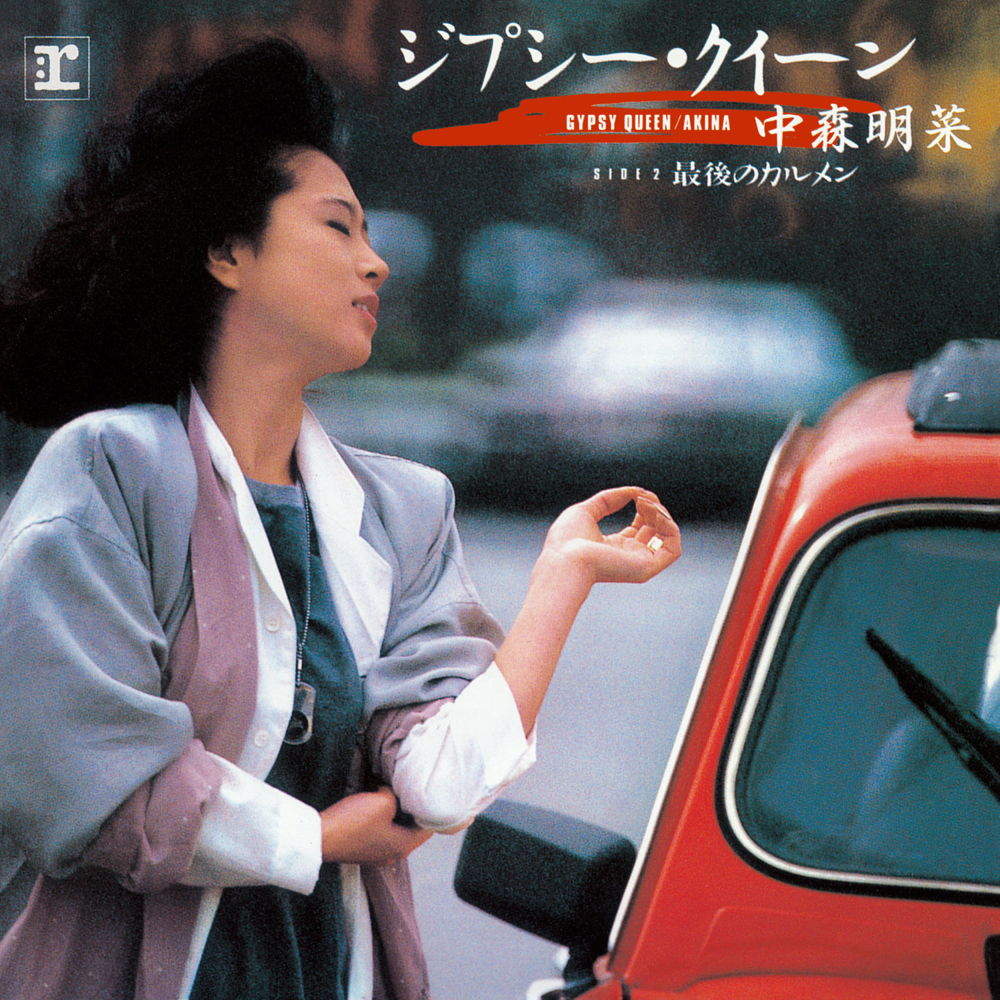
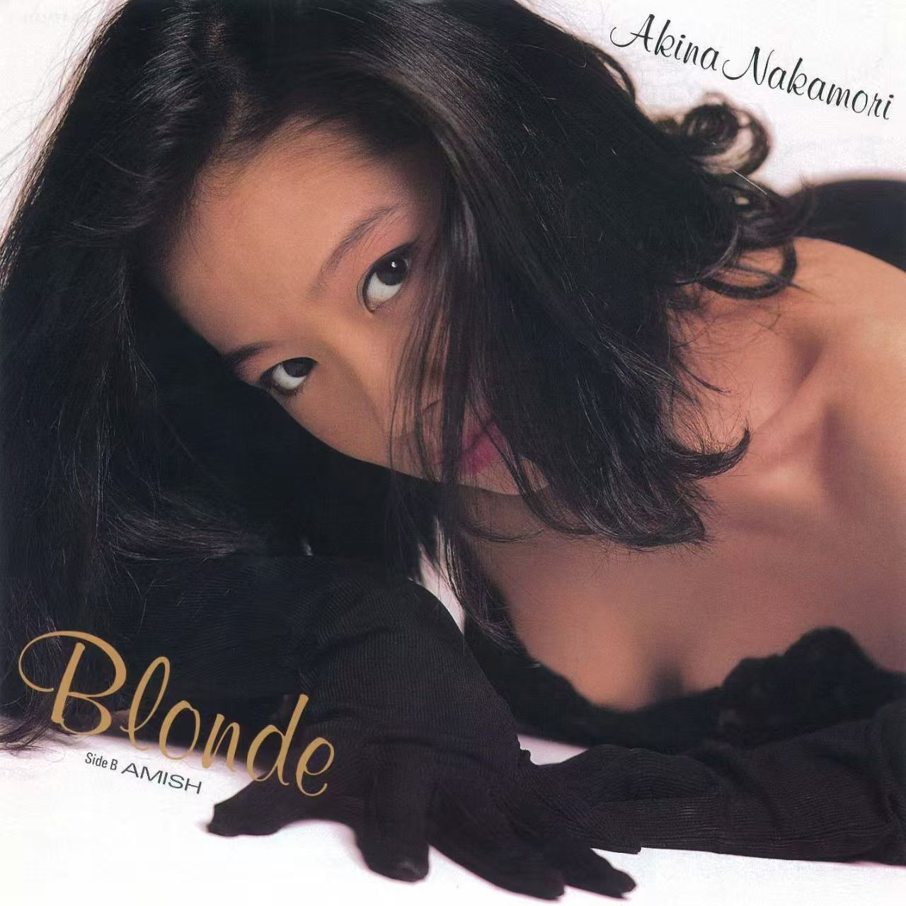
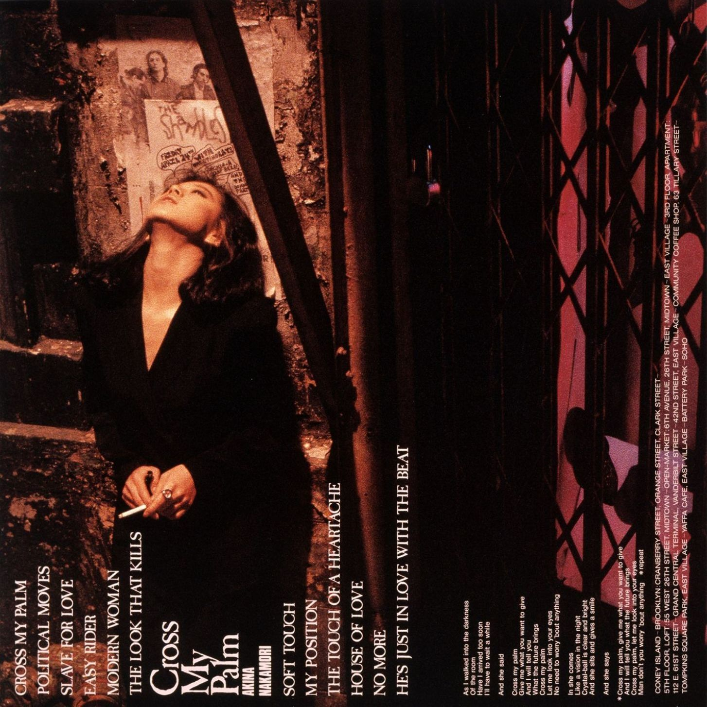
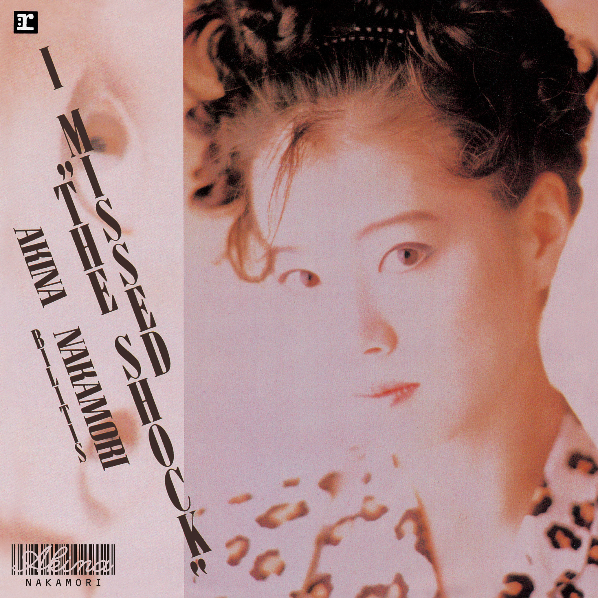

Akina的红色皮鞋 · 歌单
Slow motion
中森明菜 · 2012 Remastered
播放列表
Slow motion (2012 Remastered)
中森明菜 · 2012 Remastered
Downtown Story (2012 Remastered)
中森明菜 · 2012 Remastered
Bon_Voyage (2012 Remastered)
中森明菜 · 2012 Remastered

Shoio A (2014 Remastered)
中森明菜 · 2014 Remastered
.jpg)
Märchen Location (2012 Remastered)
中森明菜 · 2012 Remastered

Second Love (2014 Remastered)
中森明菜 · 2014 Remastered

1/2の神话(ライヴ・ヴァージョン)
中森明菜
瑠璃色の夜へ
中森明菜
目をとじて小旅行
中森明菜

Mon Amor: Glass Ni Hanbun No Tasogare
中森明菜
禁区 (2022 Lacquer Master Sound)
中森明菜

北ウイング (2014 Remaster)
中森明菜 · 2014 Remaster
涙の形のイヤリング (2014 Remaster)
中森明菜 · 2014 Remaster

Southern Wind
中森明菜
十戒 (1984) (2014 Remaster)
中森明菜 · 2014 Remaster
Kazarijanainoyo Namidaha (2012 New Mix)
中森明菜 · 2012 New Mix
Meu amor e... (2014 Remaster)
中森明菜 · 2014 Remaster
SAND BEIGE~砂漠へ
中森明菜
UNSTEADY LOVE (2012 Remastered)
中森明菜 · 2012 Remastered
SO_LONG
中森明菜
APRIL STARS (2012 Remastered)
中森明菜 · 2012 Remastered

ENDLESS (2012 Remastered)
中森明菜 · 2012 Remastered
Allegro vivace (2012 Remastered)
中森明菜 · 2012 Remastered
Kanashii Romance (2012 Remastered)
中森明菜 · 2012 Remastered
Pierce (2012 Remastered)
中森明菜 · 2012 Remastered
BLUE OCEAN (2012 Remastered)
中森明菜 · 2012 Remastered
STAR PILOT (2012 Remastered)
中森明菜 · 2012 Remastered
SOLITUDE (2014 Remaster)
中森明菜 · 2014 Remastered
DESIRE -jounetsu- (2014 Remaster)
中森明菜 · 2014 Remastered
LA BOHEME (2014 Remaster)
中森明菜 · 2014 Remastered

Gypsy Queen (2014 Remaster)
中森明菜 · 2014 Remastered
Fin (2014 Remaster)
中森明菜 · 2014 Remastered
危ないMON AMOUR (2014 Remaster)
中森明菜 · 2014 Remastered
OH_NO,OH_YES!
中森明菜
約束_(约定)
中森明菜
赤のエナメル (2012 Remastered)
中森明菜 · 2012 Remaster
ミック.ジャガーに微笑みを
中森明菜
TANGO NOIR (2014 Remaster)
中森明菜 · 2014 Remaster

BLONDE (2014 Remaster)
中森明菜 · 2014 Remaster

MODERN WOMAN: FEMME D'AJOURD'HUI (2012 Remastered)
中森明菜 · 2012 Remaster
难破船 (2014 Remaster)
中森明菜 · 2014 Remaster/p>
AL-MAUJ (2014 Remaster)
中森明菜 · 2014 Remaster
FIRE STARTER (2012 Remastered)
中森明菜 · 2014 Remaster
TATTO (2014 Remaster)
中森明菜 · 2014 Remaster

I MISSED "THE SHOCK" (我已错过这次“冲击”) (2014 Remaster)
中森明菜 · 2014 Remaster
LIAR (2014 Remaster)
中森明菜 · 2014 Remaster
Sayonara Ja Owaranai (2012 Remastered)
中森明菜 · 2012 Remaster
Standing In Blue (2012 Remastered)
中森明菜 · 2012 Remastered
Dear Friend (2014 Remaster)
中森明菜 · 2014 Remaster
CARIBBEAN (2014 Remaster)
中森明菜 · 2014 Remaster
二人静-「天河伝説殺人事件」より (2014 Remaster)
中森明菜 · 2014 Remaster
忘れて... (2014 Remaster)
中森明菜 · 2014 Remaster
愛撫
中森明菜
Everlasting Love
中森明菜
夜のどこかで~night shift~
中森明菜
今夜、流れ星
中森明菜
Good-bye My Tears
中森明菜
It's brand new day
中森明菜
.jpg)
.jpg)